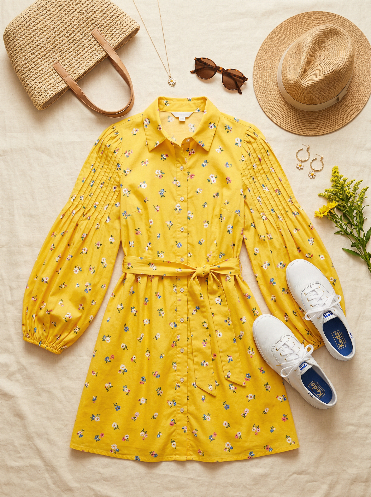
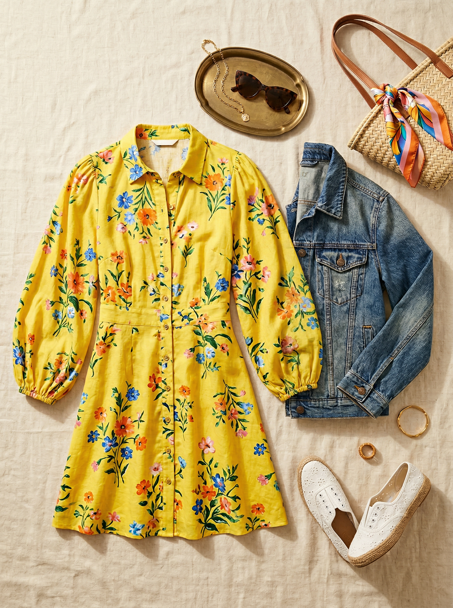
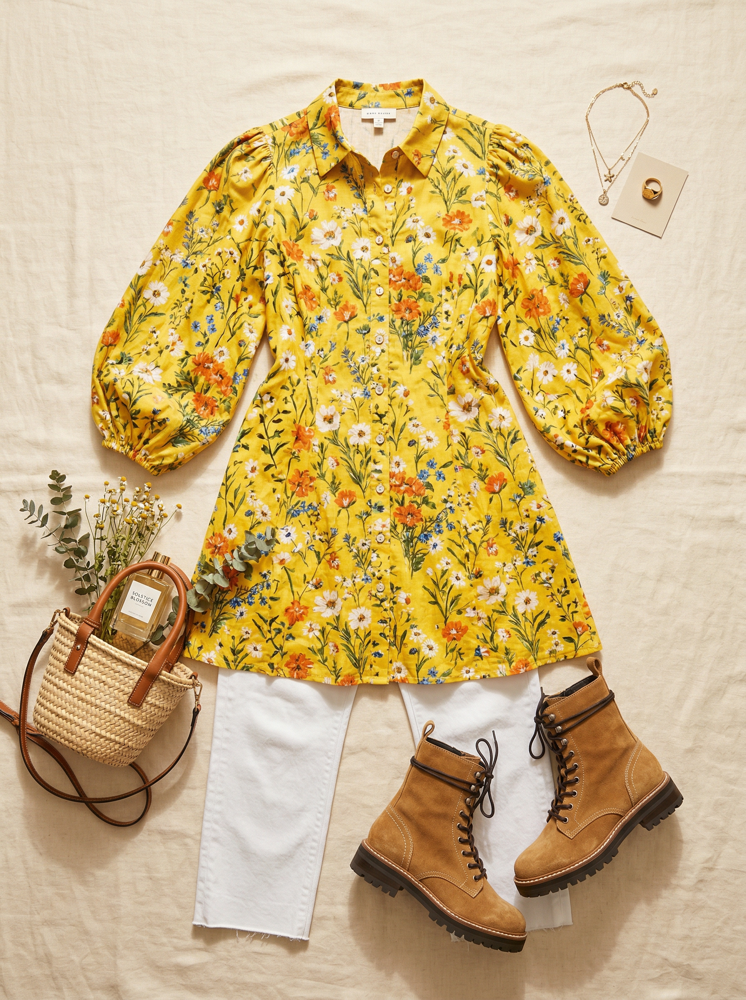

Target (A New Day)
Balloon Sleeve Mini Shirtdress
$26.25 $35
Under $27 and it looks like it costs four times more. The balloon sleeves are bang-on trend, and the yellow floral print is a bold color that fills a real gap in your wardrobe. Button-front shirt dress styling keeps it polished even when it's 95 degrees. Machine washable — throw it in with everything.
Shop NowWhy This Pick
You have zero yellow in your wardrobe and zero floral prints in casual rotation — this fixes both for $26. Balloon sleeves are trending hard right now and this dress executes them well. For DFW summers, a breezy dress is often the most practical and cutest answer. Machine washable, single-piece outfit that requires zero thought. The value here is exceptional.
3 Ways to Wear It
Styled with pieces already in your closet

Look 1 — Sunshine Saturday
Yellow Floral Shirtdress + White leather Keds sneakers (#510). Sometimes the best look is the simplest. The dress is the whole outfit — let it shine. White Keds are the perfect clean canvas underneath a bold print. Saturday errands, picking up kids, grabbing coffee — this is the effortless Texas summer look.

Look 2 — Denim-Layer Brunch
Yellow Floral Shirtdress + Denim trucker jacket (#211) + White eyelet slip-on sneakers (#508). A denim jacket over a floral dress is one of the most foolproof casual combos. The medium wash denim keeps the yellow from getting too loud, and the jacket is perfect for cold restaurant AC. Brunch with friends, done.

Look 3 — Dressed Over Denim
Yellow Floral Shirtdress (worn open as a duster layer) + White straight-leg jeans (#110) + Tan suede combat boots (#505). Open the buttons and wear it as a long floral duster over your white jeans — totally different look, same piece. The yellow floral floating over white denim is unexpected and chic. Combat boots ground it with edge.